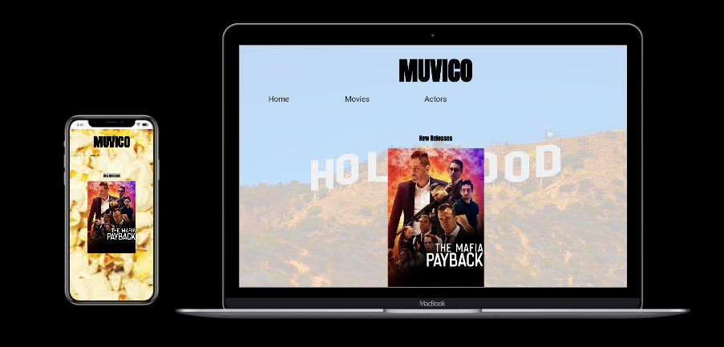
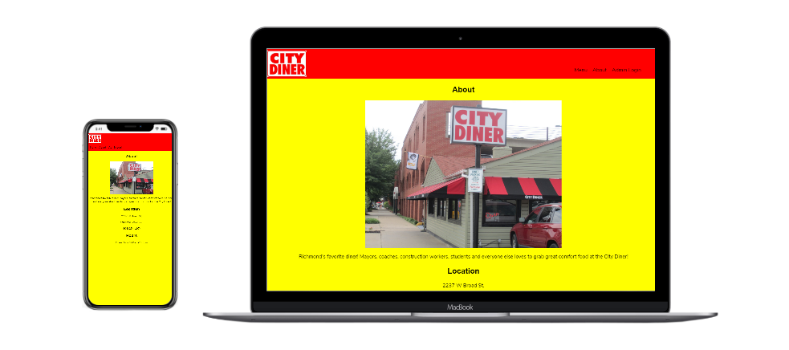
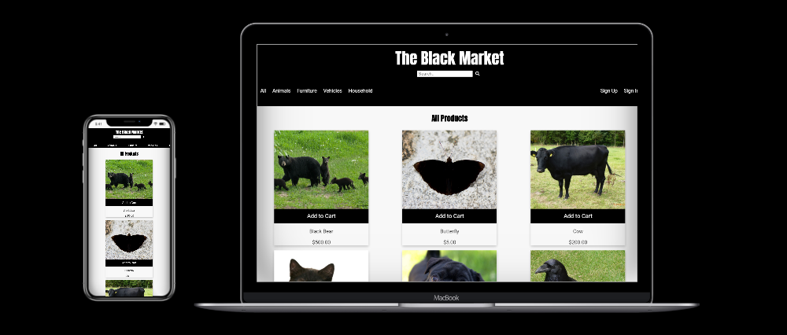

Hello, I'm Sean McCoy. I am a web development student in Richmond, Virginia. I have always loved working with computers, specifically anything internet related. Coding is an exciting challenge, and I like the thought of being able to create something that others can use.
In my spare time I like keeping up with technology. Since I spend a lot of time driving at my current job I listen to lots of podcasts and audiobooks. Recently I gotten into streaming myself playing video games on Twitch.
Quiz App
Quiz app about the Marvel Cinematic Universe. It asks the user a few trivia questions based on the Marvel movies. I am a big fan of comic books and comic book related entertainment. This app may be interesting to someone who is a Marvel fan.
Technologies used: HTML, CSS, JavaScript
MUVICO App
-
A movie app where you can see what new movies are out, as well as search movies by title and actor. The user can see the most recent movies that are released. I made this app because I am a casual movie buff. Anyone who would like to find a movie or know more about an actor's work would use this.
-
Technologies used: HTML, CSS, JavaScript, jQuery
- 
City Diner App
-
City Diner is an app for a restaurant that has a content management system for the menu data. City Diner is an actual restaurant in Richmond, Virginia that I frequent. They don't have much of a web presence so I decided to make a web app for them. The menu is stored on a database and rendered on the menu page. There is a login section where the manager can login and make changes to the menu. A user that is visiting the Richmond area and is looking for a place to dine would fine this useful.
-
Technologies used: HTML, CSS, JavaScript, React
Node, Express, PostgreSQL, Mocha, Chai, Jasmine
- 
The Black Market App
-
TBM [The Black Market] is an ecommerce app that allows users to shop with dummy products. The theme of the app is that all of the items are the color black. Users can add items to their cart, search for items by category or query, remove an item from their cart or even delete the whole cart. After users are satisfied with their cart they can checkout and then the order will be added to their order history.
-
Technologies used: React, HTML, CSS, JavaScript, Jest, Enzyme
Node, Express, PostgreSQL, Mocha, Chai, Jasmine
- 